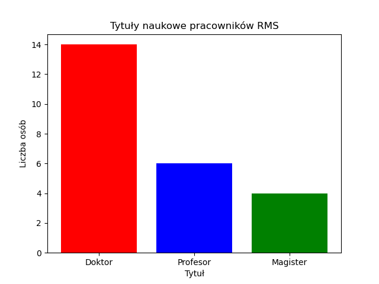

Pracownicy Katedry
Profesorowie:
-
dr hab. inż. Edyta Hetmaniok, prof. PŚprofesor Politechniki Śląskiej, MS 512
-
dr hab. inż. Wojciech Kempa, prof. PŚprofesor Politechniki Śląskiej, MS 519
-
dr hab. Iwona Nowak, prof. PŚprofesor Politechniki Śląskiej, MS 509 II
-
dr hab. Beata Sikora, prof. PŚprofesor Politechniki Śląskiej, MS 518 / AEiI 622a
-
prof. dr hab. inż. Damian Słotaprofesor, MS 515
-
prof. dr hab. inż. Radosław Grzymkowskiprofesor, MS 509 II
Doktorzy:
-
dr Katarzyna Adrianowiczadiunkt, MS 413 / Katowice 256
-
dr inż. Marek Błasikasystent, MS 508 II
-
dr inż. Konrad Kaczmarekadiunkt, MS 509 I / GiG 253
-
dr inż. Adrian Kapczyńskiadiunkt, MS 411
-
dr inż. Jarosław Karcewiczasystent, MS 411
-
dr Paweł Kozyraadiunkt, MS 508 I
-
dr inż. Marcin Lawnikadiunkt, MS 411
-
dr Ewa Łobosadiunkt, MS 413 / AEiI 622a
-
dr inż. Elwira Mateja-Losaasystent, MS 508 II
-
dr inż. Piotr Pikiewiczadiunkt, MS 411
-
dr inż. Mariusz Pleszczyńskiadiunkt, MS 509 I
-
dr Alicja Samulewiczadiunkt, MS 413
-
dr inż. Marcin Sobotaadiunkt, MS 411
-
dr hab. inż. Andrzej Starosolskiadiunkt, MS 413
Pozostali pracownicy:
Wykres - zestawienie tytułów naukowych:
